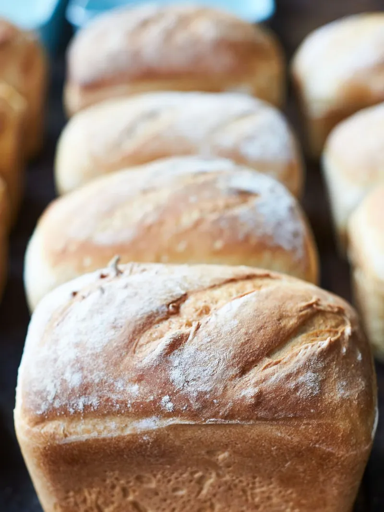

Three ingredients Bread

Jamie Oliver is one of the most well known British cooks. This time we will share his bread recipe, which only requires three ingredients. Happy backing!
Ingredients:
- 650ml water
- 7g dry yeast
- 1kg strong bread flour
Steps:
- Pour 650ml of tepid water into a large bowl. Add the yeast and mix with a fork for a couple of minutes.
- Pour in most of the flour and half a teaspoon of sea salt, then use a fork to mix together until you can’t move it anymore.
- Now get your clean hands in there and bring it together as a ball of dough, adding more flour as you need to stop your hands and the dough sticking.
- Transfer the dough to a flour-dusted surface and keep it moving, kneading, pushing and stretching it for 5 minutes, or until you have a silky and elastic dough.
- Use your floured hands to shape the dough into a rough ball, put it in a bowl, flour the top and cover with a clean, damp tea towel. Allow it to prove for about an hour or an hour and 30 minutes, or until doubled in size – ideally in a warm, draught-free place.
- Once the dough has doubled in size, knock the air out by punching it with your fist, then kneading for 30 seconds.
- You can now shape it or flavour it as required – folded, filled, traybaked, whatever – and leave it to prove for a second time, for 30 minutes to an hour, or until it has doubled in size once more.
- Preheat the oven to 180ºC/350ºF/gas 4.
- Carefully transfer your bread dough to the oven and gently close the door. Bake for about 35 minutes, or until golden. You can tell if it’s cooked by tapping its bottom – if it sounds hollow it’s done; if it doesn’t then pop it back in for a little longer.
- Once cooked, place your loaf on a cooling rack and allow to cool.
Recipe and picture belong to Jamie Oliver.